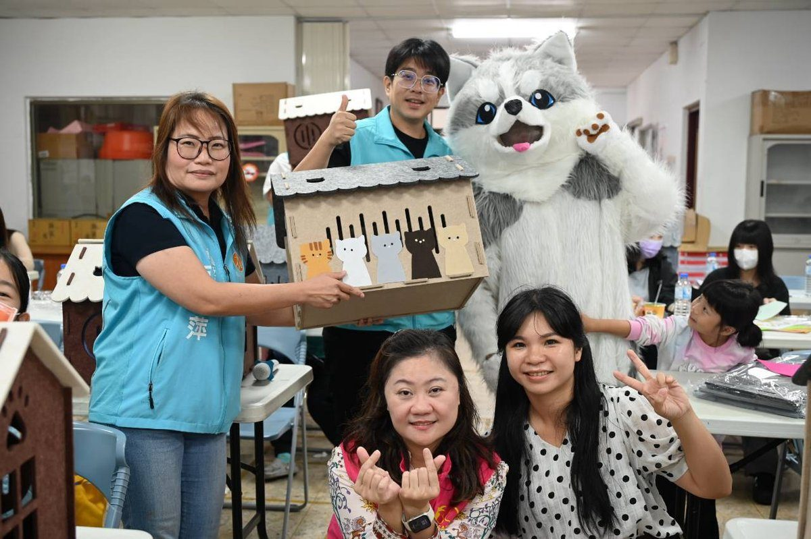

花蓮市動保生命教育體驗營登場 親子手作實踐愛不離棄

可樂電子報小編/編輯
花蓮市公所今（15）日在國富里社區活動中心舉辦「萌寵手作・愛不離棄」動保生命教育體驗營，吸引眾多親子家庭到場參與。活動由花蓮市公所主辦、社團法人臺灣寵物保姆協會協辦，分為上、下午兩場次進行，結合舞臺劇影片欣賞、趣味問答與寵物小屋手作課程，引導大小朋友在互動體驗中學習動物照護知識，從生活落實尊重生命與不任意棄養的觀念。

現場活動內容豐富多元，參與民眾除親手組裝寵物用品外，也共同觀賞「不當飼養的一天」舞臺劇影片，從貼近日常的情境中認識正確飼養原則。課程重點涵蓋認養前的責任評估、公共空間清理寵物排洩物、定期施打疫苗，以及避免餵食雞骨頭與巧克力等禁忌食物，並穿插有獎問答環節，讓孩童在輕鬆活潑的氣氛裡加深對動物保護的記憶與理解。

社團法人臺灣寵物保姆協會常務理事莊惠茵指出，體驗營以營造友善寵物社區為核心理念，透過寵物小屋 DIY 實作與生命教育課程，帶領家長與孩童共同思考飼養前的必要準備，包括日常開銷、居住環境條件及長期照護所需投入的時間與心力。課程也運用情境式問答引導孩子主動思辨，期盼讓動保知識走出課堂，轉化為家庭日常的實際行動。

花蓮市長魏嘉彥親自到場與親子家庭互動，對於家長利用假日陪伴孩子參與生命教育表示肯定。魏嘉彥強調，毛小孩是家庭不可或缺的重要成員，飼養寵物除了一時的陪伴與關愛，更代表一份長遠的承諾與責任。他期盼藉由手作結合教育的多元活動，讓孩子在動手體驗之餘，培養對動物需求的敏銳度與同理心，進而營造人與毛孩安心共處的環境。

花蓮市公所表示，動物保護教育必須從小紮根並融入日常生活，此次體驗營透過視覺觀賞、問答互動與雙手實作，引導民眾在製作寵物小屋的過程中，進一步體會毛小孩的生活需求與照護重量。未來市公所將持續推動親子共學活動，將愛護動物、負責任飼養及愛不離棄的理念自活動現場延伸至社區鄰裡，逐步打造更友善的寵物生活空間。

📸 更多現場紀實影像

🌟 掌握花蓮在地第一手資訊・歡迎訂閱追蹤
深度紀實報導、在地精采影音專題，第一時間接收最新消息！